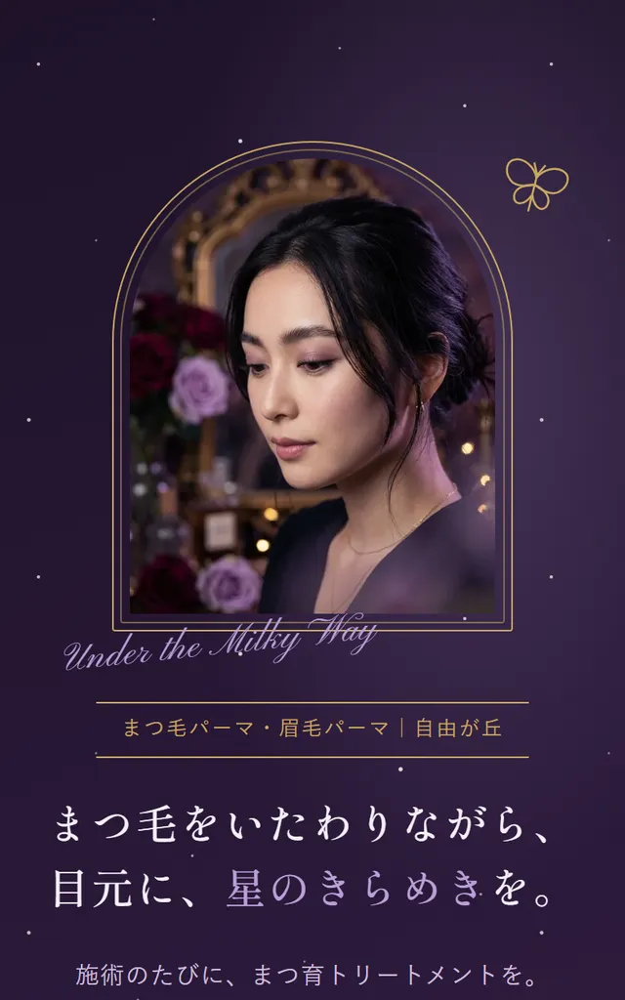
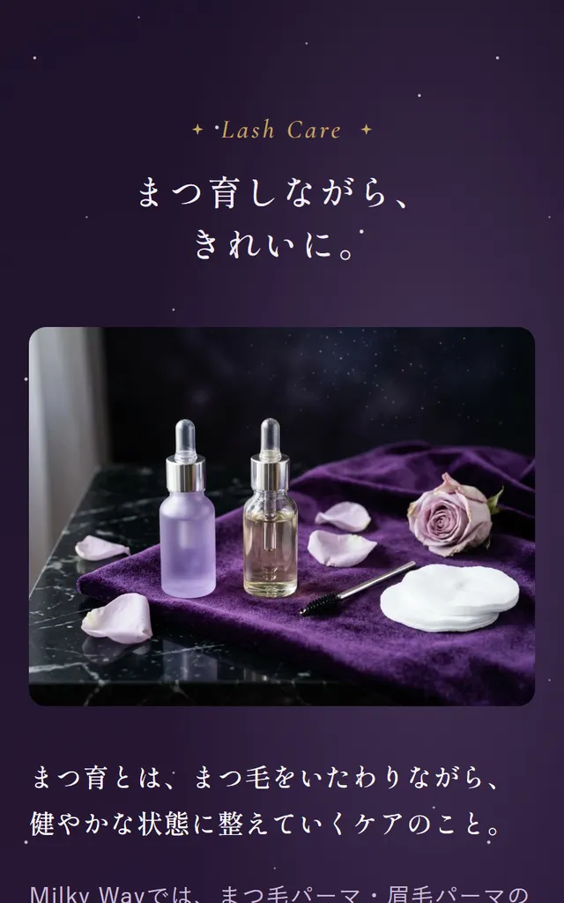
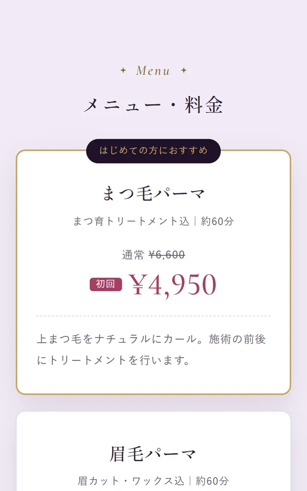
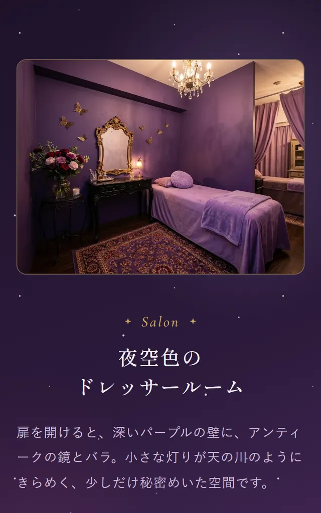

制作の解説｜LP・アイサロン
アイサロン「Milky Way」のLP
「まつ育しながら綺麗に」「ロマンチックな店内」というご要望から、
まつ毛パーマ・眉毛パーマのサロンの世界観を組み立てました。

※練習として制作した、架空のサロンのサンプルです。写真は画像生成AIで作成したイメージです。
完成したサイトを見るRequest
いただいたご要望
- 店名Milky Way
- 業種美容サロン（アイサロン）
- サービスまつ毛パーマ／眉毛パーマ
- 特徴まつ育しながら、綺麗にしていく
- 店内海外の人気ファッションブランドのような、ロマンチックな雰囲気
ご要望はこの5つでした。料金・場所・予約方法などは決まっていなかったので、あとで確認する項目として整理しました。
Thinking
考えたこと
-
何をいちばん伝えるか
まつ毛パーマは、ほかのサロンとの違いが伝わりにくいメニューです。そこで、ご要望の「まつ育しながら綺麗に」をこのサロンを選ぶ理由としてページの中心に置きました。「通うたびに、まつ毛をいたわれる」ことが伝われば、比べている人の決め手になると考えました。
-
「ブランドのような店内」をどう表すか
実在するブランドの名前やロゴ、柄はページに使えません（誤解や権利の問題につながるため）。そこで、雰囲気を色（紫×黒×金）とモチーフ（バラ・蝶・アンティークの鏡）に分けて取り入れました。店名の「Milky Way（天の川）」から星空も重ねて、「夜空色のドレッサールーム」という世界観にしています。
-
言ってはいけないことを、言い換える
「まつ毛が伸びる」「生える」のような言い方は、医薬品のような効果を約束する表現になり、美容のお店では使えません。「いたわる」「整える」と言い換え、「まつ育」がどういう意味かも注記で説明しました。お客様の声やビフォーアフター写真も、架空では作らないと決めました。
-
決まっていないことは、推測で埋めない
所在地・料金・予約方法は、実際のご依頼ならお客様に確認する項目です。確認事項としてリストにまとめたうえで、サンプルとしては仮の内容で作りました。
Design
ページで工夫したこと
スマホで見たときの画面です。
-

鏡のようなアーチ型の写真
アンティークの鏡を思わせる金の額縁に、写真を入れました。最初の画面で初回価格と予約ボタンまで見えるようにしています。
-

「まつ育」を、ひとつの章に
施術の前・施術中・お帰りのあとの3つの場面に分けて、何をしてくれるのかが具体的にわかるようにしました。
-

迷わないメニュー表
通常価格と初回価格を並べ、はじめての方におすすめのメニューに目印をつけました。所要時間も載せています。
-

店内の雰囲気を、言葉でも
写真だけでなく、「扉を開けると…」と来店したときの気持ちを文章でも描きました。
Check
確認したこと
- 3つの画面幅で表示を確認スマホ・タブレット・パソコンで、文字の折り返しやボタンの位置を確認しました。
- 表示の速さと、見やすさGoogleの計測ツールで、アクセシビリティ100点・表示速度はスマホ83点／パソコン97点でした（公開版・自分で計測）。
- 表現のルール効果を約束する言い方や、根拠のない「No.1」がないかを確認しました。
Contact
こんなページを
作りたい方へ
「まだ何も決まっていない」段階でも、
大丈夫です。
ご相談・お見積りは無料です。